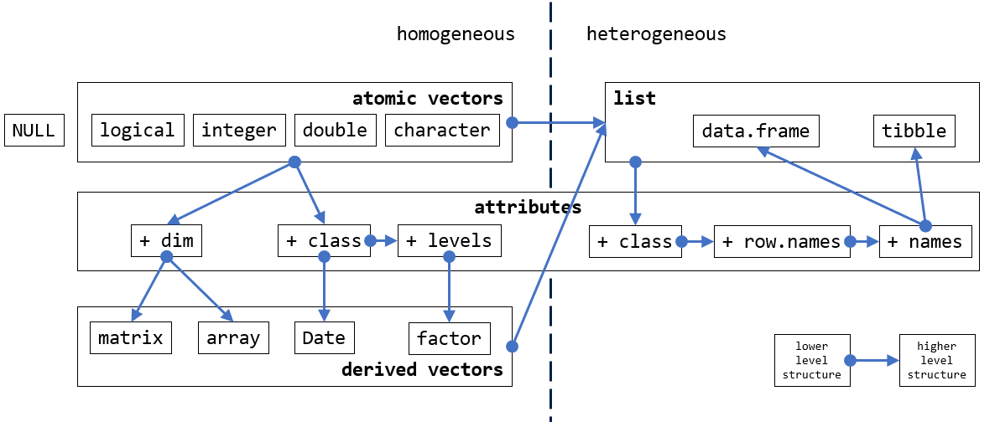

8 Data structures
If you have experiences in programming languages such as C/C++, Java, you are probably wondering why we have not said anything about primitive types such as int, float, and boolean yet? And how are we going to introduce data structures, such as vectors, without defining scalar types first?
- First of all, as you might have noticed, R is dynamically-typed (see [Typing systems]), which is why we are able to use R as a calculator without specifying the types of the values we give to R in our code.
- More importantly, and dramatically, as we will show in this session, all primitive types in R are vectors. This is a design choice that makes R different from many other programming languages, and has profound implications on how we write code in R.
Recommended readings:
- Chapter 3, Vectors Advanced R, Hadley
- R Internals
- R Language Definition
- Chapter 9, Functionals, Hadley
8.1 Overview
- atomic vectors are the primitive types in R
- data of different types may be coerced into another type
- attributes add context to atomic vectors
- matrices are atomic vectors with
dimattribute - class is attribute of atomic vectors
- all values in vectors are of the same type
- lists are collections of vectors of varying type and length

9 Fundamentals revisited
In the previous two sessions (Fundamentals I & II), we were
- Using numbers as if they were scalars
- Looping over values as if they were separate entities
Having learnt new things about R from this session, knowing that data structures of R are built on vectors, what do you think is the implication of this design?
Exercises
E3.1 Bmi2
Add a return value advice_text to the Bmi2 function we drafted in the lecture. The value of advice_text should be chosen from one of the four character strings below according to bim_value:
- “below 18.5 – you’re in the underweight range”
- “between 18.5 and 24.9 – you’re in the healthy weight range”
- “between 25 and 29.9 – you’re in the overweight range”
- “between 30 and 39.9 – you’re in the obese range”
E3.2 ||, |, &&, &
Execute the following code snippet and answer the two questions in the comment:
E3.3 table
Given t <- table(c("apple", "banana", "coconut", "apple", "apple", "banana")) 1. What is the base type of t? 2. What attributes are associated with t? 3. What do you know about each of t’s attributes? 4. Which attribute(s) does t share with a matrix?
E3.4 apply
The runif function generates a vector of uniformly distributed random numbers within a given interval. For example, runif(10, min = 2, max = 3) returns 10 random numbers between 2 and 3.
- With the help of this function, create a 1000 x 6 matrix of uniformly distributed values between
5and6. - Calculate the 6 column-wise averages of the 1000 x 6 matrix without using a for loop.